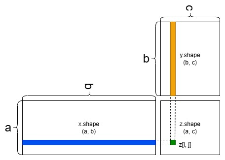
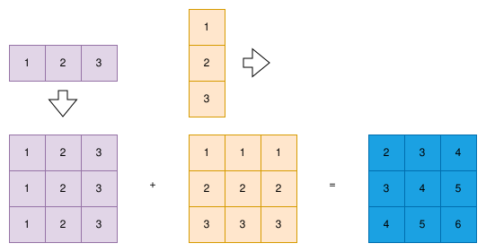

1.2 张量介绍
介绍 PyTorch 中常见的张量接口，包括创建、索引、操作等函数。
创建日期: 2025-03-30
torch.Tensor 是包含单一数据类型元素的多维数组。在功能上类似于 NumPy 的 ndarray ，但它提供了更强大的 GPU 加速计算支持，并且能够与深度学习模型无缝集成。它的基本特性如下：
多维数组：
torch.Tensor可以是标量、向量、矩阵或更高维数组。单一数据支持：所有元素的数据类型相同，默认是
torch.float32。支持 GPU 加速：可以通过
.to('cuda')轻松在 GPU 上进行运算。自动求导：可以通过
requires_grad=True记录计算图，支持自动微分（用于梯度计算）。
1.2.1 张量创建
在 PyTorch 中，张量（Tensor） 是基本的数据结构，它类似于 NumPy 的数组，可以在 GPU 上高效地进行运算。张量是深度学习模型的核心数据结构，几乎所有操作都围绕张量展开。接下来，我们将通过 tensor_create.py 介绍一些创建张量的常见方法。
1.2.1.1 从数据中创建
PyTorch 提供了多种方式来从现有的数据结构（如列表、数组）创建张量：
data = [[1, 2], [3, 4]]
tensor_from_list = torch.tensor(data)
print('Tensor from list:', tensor_from_list)
numpy_array = np.array(data)
tensor_from_array = torch.tensor(numpy_array)
print('Tensor from array:', tensor_from_array)Tensor from list: tensor([[1, 2],
[3, 4]])
Tensor from array: tensor([[1, 2],
[3, 4]])
1.2.1.2 指定形状
如果我们只知道张量的形状，但不关心具体的数值，可以使用以下方法：
torch.zeros()创建一个指定形状的全零张量。torch.ones()创建一个指定形状的全一张量。torch.empty()创建一个未初始化的张量，里面的值是随机的。torch.rand()返回一个均匀分布在 [0, 1< 之间的随机张量。torch.randn()返回一个服从标准正态分布的随机张量。
tensor_zeros = torch.zeros(3, 3)
print(tensor_zeros)
tensor_ones = torch.ones(2, 2)
print(tensor_ones)
tensor_empty = torch.empty(2, 2)
print(tensor_empty)
tensor_rand = torch.rand(2, 3)
print(tensor_rand)
tensor_randn = torch.randn(2, 3)
print(tensor_randn)tensor([[0., 0., 0.],
[0., 0., 0.],
[0., 0., 0.]])
tensor([[1., 1.],
[1., 1.]])
tensor([[0., 0.],
[0., 0.]])
tensor([[0.2154, 0.0352, 0.4765],
[0.3807, 0.5902, 0.4641]])
tensor([[-0.0182, 0.4535, -1.2759],
[-0.2348, -0.4529, -0.9981]])
1.2.1.3 其它创建函数
我们可以使用 torch.arange() 和 torch.linspace() 创建具有特定数值范围的张量：
tensor_arange = torch.arange(0, 10)
assert (tensor_arange.numpy() == [0, 1, 2, 3, 4, 5, 6, 7, 8, 9]).all()
tensor_linspace = torch.linspace(0, 1, steps=5)
assert torch.allclose(tensor_linspace,
torch.Tensor([0.0000, 0.2500, 0.5000, 0.7500, 1.0000]))创建过程中，可以指定其它的参数，比如数据类型、在 GPU 上运行：
tensor_int = torch.tensor([1, 2, 3], dtype=torch.int64)
device = 'cuda' if torch.cuda.is_available() else 'cpu'
tensor_gpu = torch.tensor([1, 2, 3], device=device)
print(tensor_int)
print(tensor_gpu)tensor([1, 2, 3]) tensor([1, 2, 3], device='cuda:0')
1.2.2 张量索引
在 PyTorch 中，torch.Tensor 提供了强大的 索引 (Indexing) 功能，使我们可以高效地访问和修改张量的元素。PyTorch 的张量索引方式类似于 NumPy ，支持基本索引、切片、布尔索引、高级索引等多种操作，文件 tensor_indexing.py 展示了一些常用的索引方法。
1.2.2.1 基本索引
PyTorch 的张量索引从 0 开始，与 Python 的 list 和 NumPy 的
tensor2d = torch.tensor([[1, 2, 3],
[4, 5, 6],
[7, 8, 9]])
assert tensor2d[0, 0] == 1
assert tensor2d[1, 2] == 6
assert tensor2d[-1, -1] == 91.2.2.2 切片
PyTorch 切片语法和 Python 的 list 、NumPy 的 ndarray 类似，使用 start:stop:step 的形式：
start：切片的起始索引（包含），默认是 0 。stop：切片的结束索引（不包含），默认是张量的维度大小。step：步长，默认是 1 。
tensor2d = torch.tensor([[1, 2, 3],
[4, 5, 6],
[7, 8, 9]])
assert (tensor2d[0] == torch.tensor([1, 2, 3])).all()
assert (tensor2d[:, 1] == torch.tensor([2, 5, 8])).all()
assert (tensor2d[1:, 1:] == torch.tensor([[5, 6], [8, 9]])).all()1.2.2.3 布尔索引
PyTorch 允许使用 布尔掩码 (Boolean Mask) 索引，提取符合条件的元素：
tensor = torch.tensor([10, 20, 30, 40, 50])
mask = tensor > 25
assert (mask == torch.tensor([False, False, True, True, True])).all()
assert (tensor[mask] == torch.tensor([30, 40, 50])).all()1.2.2.4 高级索引
在二维张量中按指定的行和列索引提取元素：
tensor2d = torch.tensor([[1, 2, 3],
[4, 5, 6],
[7, 8, 9]])
row_indices = torch.tensor([0, 1, 2])
col_indices = torch.tensor([2, 1, 0])
assert (tensor2d[row_indices, col_indices] == torch.tensor([3, 5, 7])).all()省略符号用于索引时，表示选择所有的维度，而不需要明确列出每一个维度：
assert (tensor2d[..., 0] == torch.tensor([1, 4, 7])).all()None 是一种特殊的标记，用于在索引中插入新的维度，常用于通过增加维度来改变张量的形状：
tensor1d = torch.tensor([1, 2, 3])
assert tensor1d.shape == (3,)
tensor2d = tensor1d[:, None]
assert tensor2d.shape == (3, 1)1.2.3 张量操作
PyTorch 张量支持的操作非常丰富，涵盖了基本的数学运算、聚合、广播、变形等各类操作。文件 tensor_operate.py 展示一些常见的函数用法。
1.2.3.1 数学运算
PyTorch 提供了丰富的数学操作来进行各种计算，包括基本的算术运算、线性代数运算等：
a = torch.tensor([1, 2, 3])
b = torch.tensor([4, 5, 6])
assert ((a + b) == torch.tensor([5, 7, 9])).all()
assert ((a * b) == torch.tensor([4, 10, 18])).all()
a = torch.tensor([[1, 2], [3, 4]])
b = torch.tensor([[5, 6], [7, 8]])
print(torch.mm(a, b))
assert (torch.mm(a, b) == a @ b).all()tensor([[19, 22],
[43, 50]])
这里重点说明矩阵的点积，如果有两个矩阵 \(A\) 和 \(B\) ，它们的形状分别是 \((m, n)\) 和 \((n, p)\) ，那么矩阵乘法 \(A \times B\) 的结果是一个形状为 \((m, p)\) 的矩阵。

在处理高维矩阵时，点积规则遵循类似的逻辑，但需要对多个维度进行匹配。假设有两个张量 A 和 B ，它们的形状分别是 \(d_1, d_2, ... , d_n\) 和 \(d_n, d_{n+1}, ... , d_m\) ，则点积后的形状为：
1.2.3.2 聚合操作
使用
sum()对一维张量进行元素求和，计算所有元素的总和。通过
sum(dim=0)对二维张量按列进行求和，聚合指定维度的数据。分别使用
mean()、max()和min()对张量进行统计聚合，计算均值、最大值和最小值。
tensor = torch.tensor([1, 2, 3, 4])
assert tensor.sum() == 10
tensor = torch.tensor([[1, 2], [3, 4]])
assert (tensor.sum(dim=0) == torch.tensor([4, 6])).all()
tensor = torch.tensor([1.0, 2.0, 3.0, 4.0])
assert torch.isclose(tensor.mean(), torch.tensor(2.5))
assert torch.isclose(tensor.max(), torch.tensor(4.0))
assert torch.isclose(tensor.min(), torch.tensor(1.0))1.2.3.3 广播机制
广播机制 (Broadcasting) 是指在不同形状的张量之间进行元素级操作时，自动扩展较小的张量，以使其形状匹配较大的张量，从而进行后续操作。如下所示：
a = torch.tensor([1, 2, 3])
b = torch.tensor([[1], [2], [3]])
c = a + b
assert a.shape == (3,)
assert b.shape == (3, 1)
assert c.shape == (3, 3)
print(c)
1.2.3.4 形状变换
张量的形状变换是常见的操作，我们可以通过几种方法来改变张量的形状，包括 view() 、reshape() 、transpose() 、squeeze() 、unsqueeze() 等。以下是常见的形状变换方法及其用途：
view()和reshape()用于重新排列张量的形状。